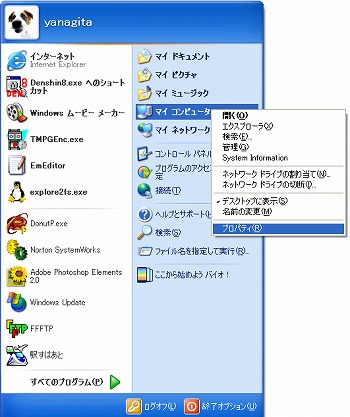
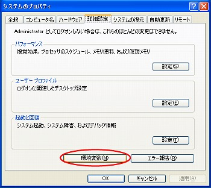
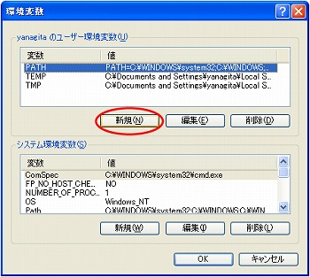
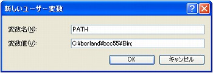

1 WindowsXPにおける Borland C++ のインストール及び設定
ここでは、WindowsXPのOSに限定してBorland C++ のインストール及び設定 の方法を説明します。Windows2000も基本的には設定方法は変わりませんが、 その他のOS(9x系OSなど)は多少違いますので注意してください。 以下に、インストール及び設定方法を順番に説明します。
1.1 Borland C++ のダウンロード及びインストール
Borland社の無償ダウンロードサービスのページである
http://www.borland.co.jp/cppbuilder/freecompiler/bcc55steps.html
からボーランドの C++ 開発コンパイラ (freecommandlinetools2.exe) を
任意のフォルダにダウンロードし、そのファイルは自己解凍型であるので
ダブルクリックすればインストールできます。
インストールされる場所は標準で、c:\borland にインストールされるはずです。
念のため、インストール後にCドライブの中を確認してください。
（注意） コンパイラをダウンロードするためにはメールアドレスを
利用し、サイトに登録してFTP経由でダウンロードするため多少時間がかかります。
1.2 パスの設定
|  |
[スタート] ↓ [マイコンピュータ] そして、マイコンピュータを右クリックし、 プロパティを左クリックします。 すると、「システムのプロパティ」が開きます。 |
|  |
「詳細設定」のタブをクリックし、「環境変数」をクリックします。 すると、「環境変数」が開きます。 |
|  | 「ユーザー環境変数(U)」の「新規(N)」のボタンをクリック すると、「新しいユーザー変数」が開きます。 |
|  |
変数名(N)に PATH と書き込み、 変数値(V)に C:\borland\bcc55\Bin; と書き込みます。 |
1.3 bcc32.cfg と ilink32.cfg の作成と保存
以下に、示すbcc32.cfg と ilink32.cfgを
メモ帳などで作り、c:\Borland\Bcc55\Bin に
bcc32.cfg と ilink32.cfg の2つのファイルを保存する。
| bcc32.cfg | ilink32.cfg | |
-I"c:\Borland\Bcc55\include" -L"c:\Borland\Bcc55\lib" -L"c:\Borland\Bcc55\lib\Psdk" |
-L"c:\Borland\Bcc55\lib" |
(具体例) 右クリックをして「対象をファイルに保存(A)」でファイルの種類を 「すべてのファイル」を選択してから「保存(S)」ボタンを押してください。
bcc32.cfg
ilink32.cfg
1.4 設定の確認
Cドライブの下に prog などの名前でディレクトリを作り、 そのディレクトリの中でメモ帳などで test1.c という名前で以下のような サンプルプログラムを書いて下さい。
| test1.c |
#include |
コマンドプロンプトで使えるコマンドに慣れていない人のために、 以下に基本的なコマンド一覧を載せておきます。
| コマンド一覧 | |
| dir | ディレクトリの中身を表示 |
| cd | 現在のディレクトリを移動 |
| mkdir(md) | ディレクトリを作成 |
| rmdir(rd) | ディレクトリを削除 |
| tree | ディレクトリ構造を視覚的に表示 |
| xcopy | ディレクトリ構造そのままにファイルとディレクトリをコピー |
| copy | ファイルのコピー |
| move | ファイルの移動 |
| del | ファイルの削除 |
| ren | ファイルの名前を変更 |
| find | ファイルの中から特定のテキスト文字列を検索 |
Copyright © 2004 "Satoshi Yanagita" All rights reserved
｜ 作成者：柳田 聡司(Yanagita Satoshi) ｜ Ma & Inoue Laboratory ｜ Ibaraki University ｜